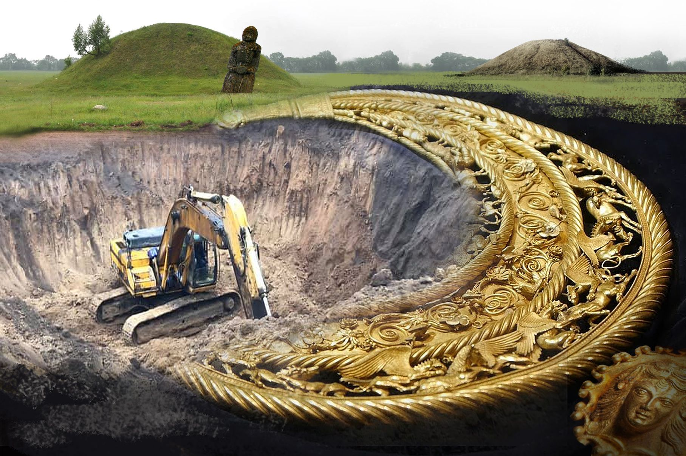
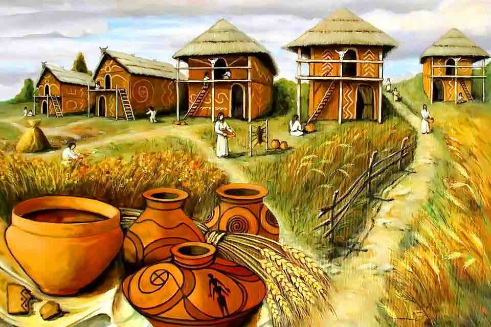
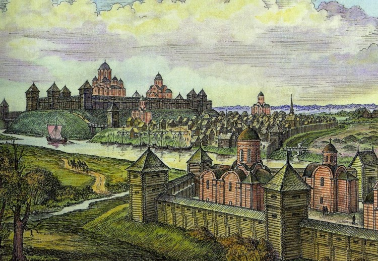

Скіфські кургани
Скіфські кургани - це унікальні археологічні пам’ятки, що містять багато цінних артефактів давньої цивілізації. Ці кургани, розкидані по степах України, є свідченнями розвиненої культури скіфів, які залишили по собі золоті прикраси, зброю та предмети побуту. Археологічні розкопки допомагають розкрити таємниці їхнього життя та поховальних традицій.

Трипільська культура
Трипільська культура є однією з найдавніших землеробських цивілізацій Європи V-III тисячоліття до н.е. Її представники славилися унікальною керамікою з геометричними орнаментами та великими поселеннями. Розкопки на території України відкривають секрети їхнього способу життя, сільського господарства та релігійних обрядів.

Київська Русь
Археологічні дослідження часів Київської Русі відкривають світ середньовічних міст та храмів. Розкопки в таких місцях, як Київ, Чернігів та Новгород-Сіверський, виявили залишки оборонних споруд, церков та предметів щоденного вжитку, що свідчать про розквіт культури та торгівлі в той період.
Козацька доба
Археологічні пам’ятки козацької доби представлені залишками фортець, зброєю та побутовими предметами. Січі та укріплення, такі як Хортиця, зберігають історію козацької боротьби за незалежність, а розкопки відкривають деталі їхнього військового мистецтва та побуту.